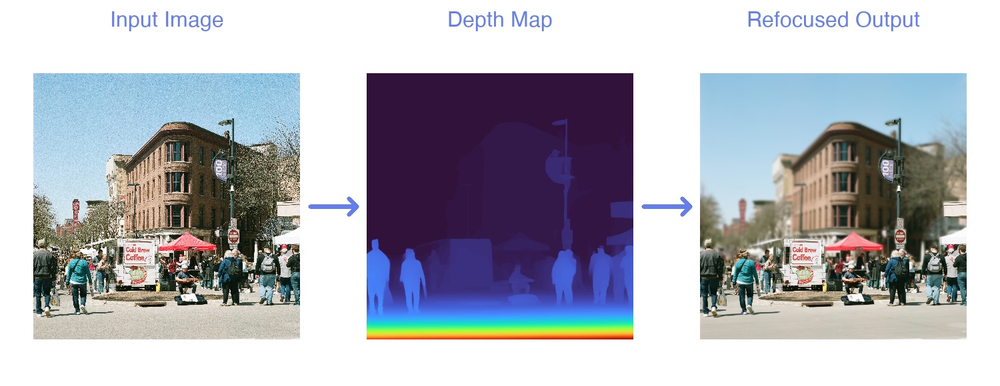
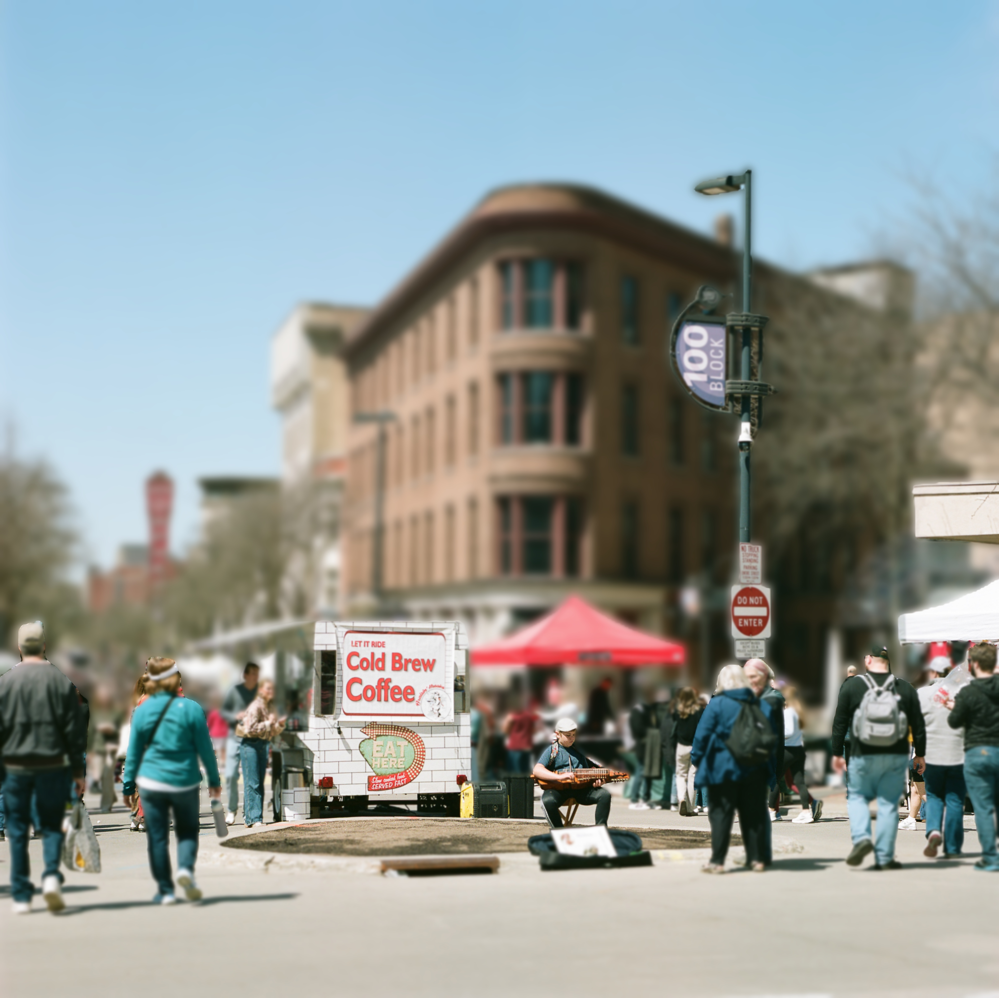
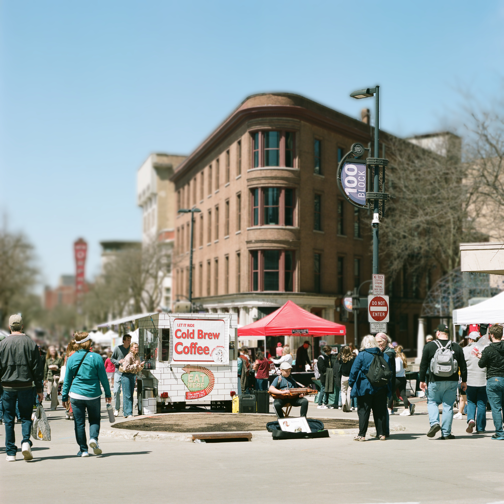

Post-Capture Single Image Refocusing
University of Wisconsin-Madison | CS 566 - Computer Vision
Abstract
We present a complete pipeline for post-capture refocusing of single images using deep learning-based depth estimation. Our system enables users to change the focus point and depth-of-field characteristics of a photograph after it has been taken, simulating different camera settings and creative focus effects. The pipeline consists of three key stages: (1) monocular depth estimation using Depth Anything V2, (2) all-in-focus image reconstruction with Restormer, and (3) physically-based depth-of-field simulation with customizable camera parameters including focal length, aperture, and focus distance.
Introduction
Traditional photography requires careful consideration of focus and depth-of-field at the time of capture. Once a photo is taken, these settings are fixed. Our project addresses this limitation by enabling post-capture refocusing through computational photography techniques. By combining state-of-the-art monocular depth estimation with physically-accurate blur simulation, we can retroactively adjust the focus plane and aperture characteristics of any photograph.
This technology has practical applications in photography workflows, allowing photographers to experiment with different creative choices after shooting, and in mobile photography where physical aperture control is limited.
Method Overview

Complete refocusing pipeline: from single RGB input to customizable depth-of-field output
Depth Estimation
We use Depth Anything V2, a Vision Transformer-based monocular depth estimation model, to predict dense depth maps from single RGB images. The model employs a ViT-Large backbone pre-trained on massive datasets, providing robust zero-shot performance across diverse scenes.
- Bilateral filtering for edge-preserving smoothing
- Exponential mapping: Z = Z_min × exp(d × log(Z_max/Z_min))
- Median filtering to remove noise artifacts

RGB image → Dense depth prediction → Refined depth map
All-in-Focus Reconstruction
Using Restormer, a Transformer-based image restoration model, we generate an all-in-focus version of the input image by removing existing defocus blur. The model uses multi-head transposed attention and gated feed-forward networks for efficient high-resolution restoration.
- Handles spatially-varying defocus blur
- Preserves fine details and textures
- Works on single images without dual-pixel data

Defocused input → Restormer → Sharp all-in-focus image
Depth-of-Field Simulation
We simulate realistic depth-of-field by computing the Circle of Confusion (CoC) for each pixel based on its depth, selected focus distance, and camera parameters. The thin lens equation determines blur radius:
where:
A = focal_length / f_number (aperture diameter)
s = focus distance
z = depth at pixel
f = focal length
- Generate 20+ blur layers with varying Gaussian kernel sizes
- Map each pixel to appropriate blur layer based on CoC
- Blend layers with linear interpolation for smooth transitions

Depth + Focus → CoC Map → Blur Layers → Final refocused image
Interactive Results
Depth Map Visualization
Slide to compare the original image with the predicted depth map. Warmer colors (red) indicate closer objects, while cooler colors (blue) indicate distant objects.

About the Depth Map
Close objects (0.5m - 2m)
Medium distance (2m - 10m)
Far objects (10m - 100m)
Before and After Refocusing
Compare the original image with the refocused version. Notice how the depth-of-field has been adjusted to create selective focus.
Technical Details
📷 Focal Length: 50mm
🎯 Aperture: f/2.8
📏 Focus Distance: 2.5m
🔢 Blur Layers: 20
🎨 Max Blur: 40 pixels
⚙️ Sensor: 36mm (Full-frame)
✨ Shallow depth-of-field
🎭 Natural bokeh blur
🎯 Sharp focus plane
Circle of Confusion (CoC) Map
The CoC map shows how much blur is applied to each pixel. Brighter areas = more blur. This is computed using the thin lens equation based on depth and camera parameters.
📐 The Thin Lens Equation
where:
A = focal_length / f_number (aperture diameter)
s = focus distance
z = depth at pixel
f = focal length
pixel_size = sensor_width / image_width
Key Insights:
- Larger aperture (smaller f-number) → larger CoC → more blur
- Greater depth difference from focus plane → larger CoC
- Longer focal length → larger CoC (more pronounced effect)
- CoC directly determines the Gaussian blur kernel radius
Aperture Effects (f/1.0 to f/11.0)
Our system can simulate different aperture settings, creating varying degrees of background blur (bokeh). Larger apertures (smaller f-numbers) produce more blur.
Maximum bokeh effect

Maximum bokeh effect
Professional look
Balanced sharpness

Extended depth-of-field
Extended depth-of-field
📊 Aperture Quick Reference
| f-number | Aperture Size | Blur Amount | Use Case |
|---|---|---|---|
| f/1.2 | Very Large | Maximum | Portrait, low light, artistic bokeh |
| f/1.4 | Very Large | Maximum | Portrait, low light, artistic bokeh |
| f/2.8 | Large | Strong | Professional portraits, product photos |
| f/5.6 | Medium | Moderate | Group photos, street photography |
| f/8.0 | Small | Minimal | Landscapes, architecture |
| f/11.0 | Small | Minimal | Landscapes, architecture |
Focus Sweep Animation
Smoothly transition the focus plane from near to far objects. This demonstrates how our system can dynamically adjust focus to any distance.

Animation showing focus transitioning from foreground to background (10 frames)
🎬 How to Create This Effect
python main.py your_image.jpg --mode sweep
# Creates 10 frames with focus sweeping through depth range
# Output: sweep.gif (500ms per frame)
Technical Details:
• Samples 10 focus distances evenly across depth range
• Recomputes CoC map for each focus distance
• Renders 10 separate refocused images
• Combines into animated GIF using imageio
• Perfect for showcasing depth understanding
The focus sweep animation is excellent for project presentations! It clearly demonstrates your system's ability to refocus anywhere in the scene and provides a compelling visual showcase of the depth understanding.
Key Features
- Interactive focus point selection via mouse click
- Customizable camera parameters (focal length, aperture, sensor size)
- Multiple rendering modes: basic, comparison, aperture sweep, focus animation
- Physically-accurate Circle of Confusion (CoC) computation
- Camera presets for portrait, landscape, and macro photography
- Batch processing support for multiple images
- GPU acceleration with CUDA/MPS support
Implementation Details
Technical Stack
- Python 3.8+ with PyTorch
- Depth Anything V2 (ViT-Large backbone)
- OpenCV for image processing and interactive GUI
- NumPy for numerical computations
Circle of Confusion Formula
The blur radius for each pixel is computed using the thin lens equation:
Usage Example
Batch Processing
For processing multiple images with saved focus settings:
Challenges & Solutions
Depth Map Quality
Raw depth predictions sometimes contained noise and inaccurate edges. We addressed this through:
- Bilateral filtering to smooth depth while preserving edges
- Median filtering to remove salt-and-pepper noise
- Exponential depth mapping for more realistic distance distribution
All-in-Focus Reconstruction
Recovering sharp details from heavily blurred regions proved challenging. While Restormer improved local contrast, complete detail recovery from extreme defocus remains an open problem. Our system works best with moderately blurred inputs.
Performance Optimization
High-resolution processing was memory-intensive. We implemented:
- GPU acceleration (CUDA/MPS) for depth inference
- Layer-based rendering with efficient blur computation
- Batch processing pipeline for multiple images
Future Work
- Fine-tune Restormer on DPDD dataset for better deblurring
- Implement custom aperture shapes (hexagonal, octagonal bokeh)
- Add real-time preview for interactive refocusing
- Quantitative evaluation on benchmark datasets (NYU Depth V2)
- Edge-aware compositing to reduce halo artifacts
- Support for video refocusing with temporal consistency
References
[1] Yang, L., et al. (2024). "Depth Anything V2." arXiv preprint arXiv:2406.09414
[2] Zamir, S. W., et al. (2022). "Restormer: Efficient Transformer for High-Resolution Image Restoration." CVPR 2022
[3] Abuolaim, A., & Brown, M. S. (2020). "Defocus Deblurring Using Dual-Pixel Data." ECCV 2020
Code & Resources
GitHub Repository: github.com/your-repo/refocusing-project
Demo Video: youtube.com/your-demo